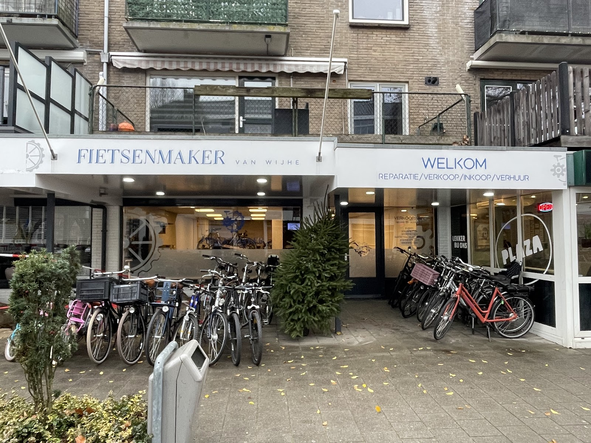
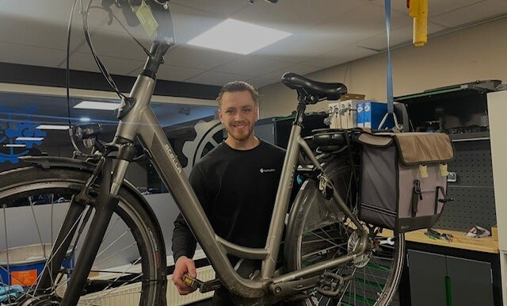
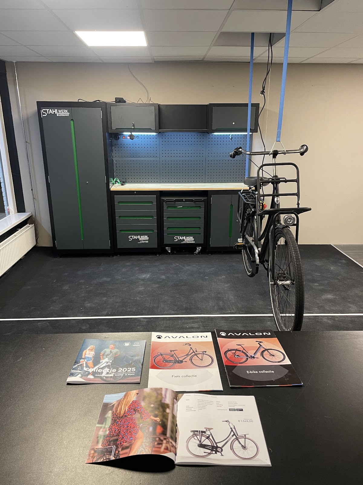
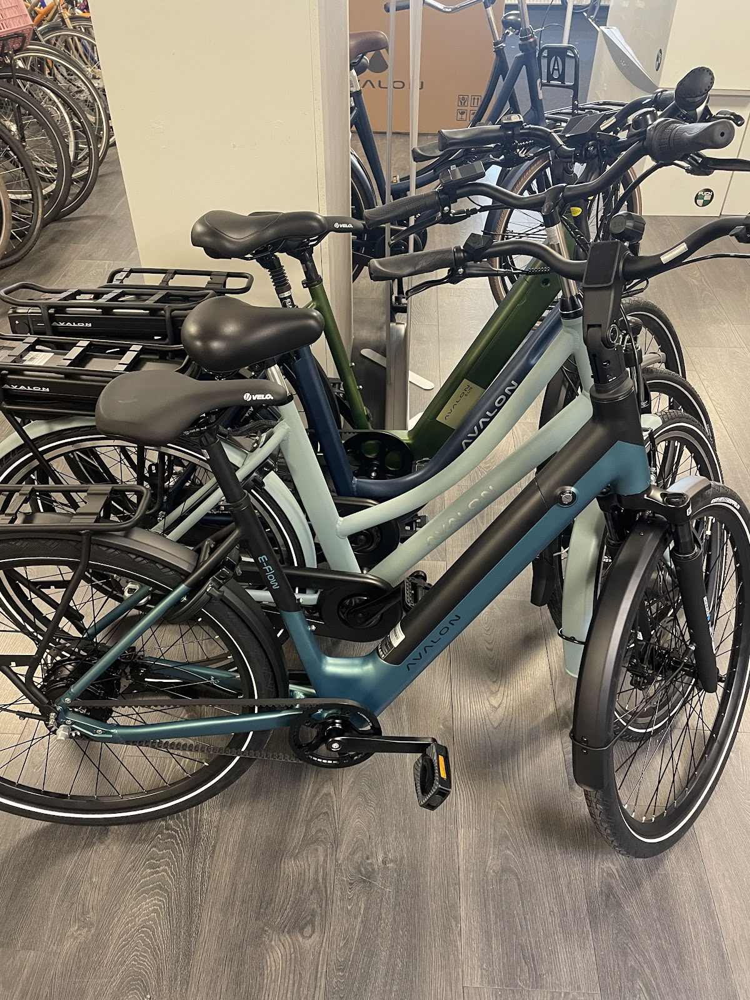
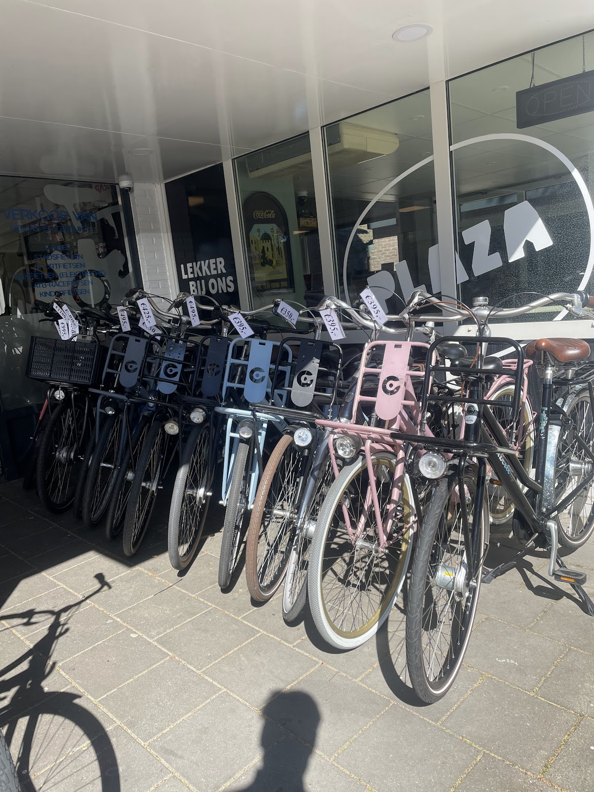
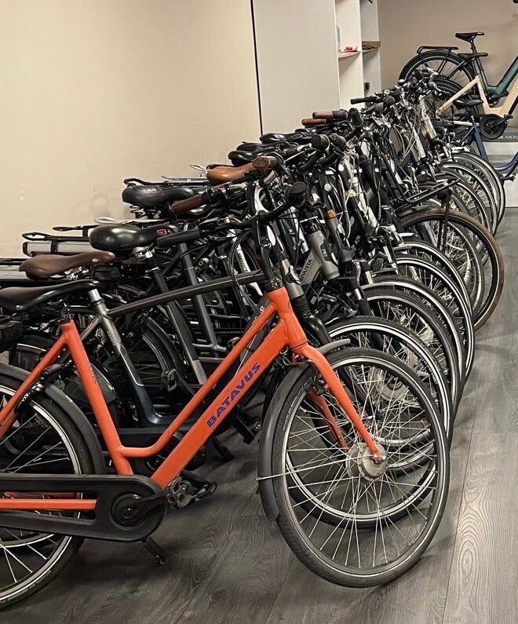
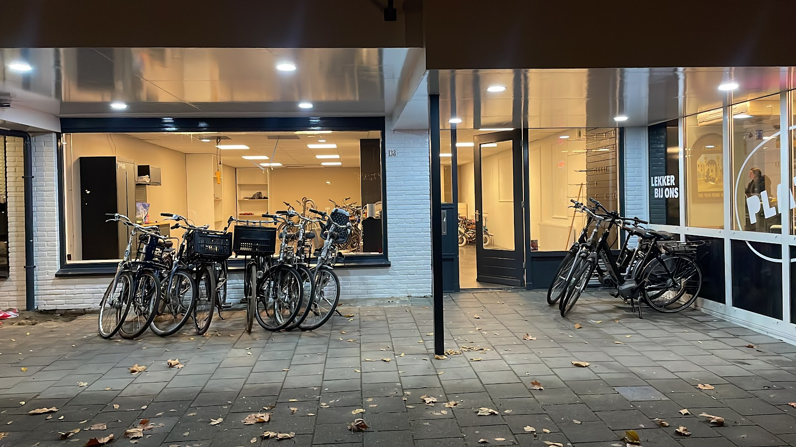

Hofveld 138, Apeldoorn-Zuid
Uw fiets weer rijklaar. Gewoon langskomen.
Reparatie, onderhoud en e-bike service in de werkplaats van Wesley van Wijhe. Zonder afspraak, elke werkdag tot acht uur 's avonds. En zolang uw fiets bij ons staat, rijdt u gratis op een leenfiets.

Geen afspraak nodig. Kom met uw fiets langs, we kijken er direct naar.
Open tot 20:00. Ook na uw werk nog terecht, van maandag tot vrijdag.
Gratis leenfiets. Staat uw fiets in onderhoud, dan rijdt u op de onze.

Eén vakman, die uw fiets zelf onder handen neemt
Fietsenmaker van Wijhe is mijn eigen zaak. Ik ben Wesley van Wijhe en ik werk al ruim 8 jaar aan fietsen en e-bikes: onderhoud, reparatie en verkoop, voor particulieren en voor bedrijven.
Een lekke band, een kapotte rem of een complete onderhoudsbeurt: alle soorten fietsen zijn welkom. Ik vertel u vooraf wat het kost en achteraf wat ik heb gedaan.
"Wesley is een vakman die duidelijk plezier heeft in zijn werk. Hij werkt hard, denkt met je mee en levert gewoon goed werk af."

In de werkplaats
Elektrische fiets, bakfiets, mountainbike, racefiets, stadsfiets of kinderfiets: ze kunnen allemaal bij ons terecht.
- Onderhoud
- Ketting smeren, remmen en versnellingen afstellen, banden en wielen nakijken. Zo blijft uw fiets veilig en licht lopen.
- Groot onderhoud
- Een grondige opknapbeurt: we controleren alle onderdelen en vervangen wat versleten is.
- E-bike service
- Mechanisch en elektrisch: motorsoftware uitlezen, accu en bekabeling controleren, display en trapondersteuning testen en waar nodig updaten.
- Reparatie
- Van een lekke band tot een gebroken frame, van verlichting tot accuproblemen. Met hoogwaardige onderdelen.
Vaste prijs voor een onderhoudsbeurt
Elke fiets is anders. Voor reparaties geef ik liever een eerlijke prijs op basis van uw fiets dan een standaardtarief. Kom vrijblijvend langs, dan krijgt u direct een prijsindicatie. Zo weet u vooraf wat het kost.
Even overleggen? Bel 06 34657011Werkbon
Fietsenmaker van Wijhe, Hofveld 138
Onderhoudsbeurt
- Kinderfiets€ 40,-
- Stadsfiets zonder versnellingen€ 50,-
- Stadsfiets met versnellingen€ 65,-
- Derailleurfiets€ 70,-
- E-bike€ 75,-
Alle onderhoudsbeurten zijn exclusief onderdelen en montage. U kunt het hele jaar door terecht.
Altijd in de beurt
- Remmen afstellen en controleren
- Ketting, tandwielen en derailleur smeren
- Versnellingen afstellen
- Bandenspanning en profiel
- Wielen, spaken en lagers
- Stuur, zadel en frame
Extra bij een e-bike
- Motorsoftware uitlezen
- Accu controleren
- Bekabeling en contactpunten
- Display en trapondersteuning
- Software-updates waar nodig

Elk merk, ook als het niet meer bestaat
We repareren fietsen van een groot aantal merken, ook van merken die gestopt of failliet zijn. Een greep uit wat er in de werkplaats staat:
Fietsen
Alpina, Batavus, Cortina, Cube, Gazelle, Giant, KOGA, Loekie, Popal, Raleigh, Sparta, Specialized, Tomos, Trek, Union, VanMoof, Vogue
E-bikes
Amslod, Avalon, Batavus, Brinckers, Cannondale, Cube, Forza, Gazelle, Giant, Huyser, KOGA, Leader Fox, Levit, Montana, Montego, Pointer, Popal, Qwic, Raleigh, Sensa, Sparta, Stella, Tomos, Trek, Union, VanMoof, Victoria, Vogue
Nieuw, tweedehands of te huur
Op zoek naar een stadsfiets, elektrische fiets of kinderfiets? Ik help u een fiets te vinden die past bij uw wensen en uw budget. Elke fiets die we verkopen is eerst grondig nagekeken en rijklaar gemaakt.
Even een fiets nodig? U kunt bij ons ook fietsen huren.


Wat klanten zeggen
5,0 uit 43 Google-reviews
"Na gebeld te hebben later op de avond voor mijn fiets die het niet deed op onze vakantie super snel en goed geholpen! Zeer tevreden en vriendelijke service!"
"Ik kon sochtends direct terecht voor mijn lekker band zonder gebeld te hebben en smiddagds stond de fiets snel weer klaar. Goede service en helemaal niet duur!"
"Heel snel en fijn geholpen voor weinig geld! Top"
Kom langs aan het Hofveld
In het winkelcentrum van Apeldoorn-Zuid. Geen afspraak nodig: zet uw fiets voor de deur en loop binnen.
Openingstijden
- Maandag
- 10:00 tot 20:00
- Dinsdag
- 10:00 tot 20:00
- Woensdag
- 10:00 tot 20:00
- Donderdag
- 10:00 tot 20:00
- Vrijdag
- 10:00 tot 20:00
- Zaterdag
- Gesloten
- Zondag
- Gesloten

's Avonds nog open: tot 20:00 uur.